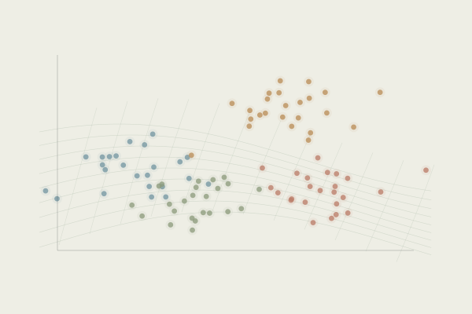

The geometry of cognition
Ongoing collaborative research

How can we distinguish an overall cognitive state from the particular strategy used to reach it?
Different strategies can share parts of the same cognitive processing. Comparing their neural activity patterns lets us ask which relationships reflect a shared state and which reflect strategy-specific structure.
Low-dimensional maps (Isomap) help explore these relationships. Representational similarity analysis (RSA) and pattern component modelling (PCM) then test them against explicit candidate models, with sensitivity checks for noise, sampling and temporal structure.
- My role
- Implementing and checking representational analyses, comparing modelling choices, and preparing visual and statistical reports. Interpretation and manuscript development are collaborative.
- Methods
- fMRI · Isomap · RSA · PCM · sensitivity analyses
- Setting
- Collaborative fMRI research
Empirical results and manuscript figures remain private until publication.